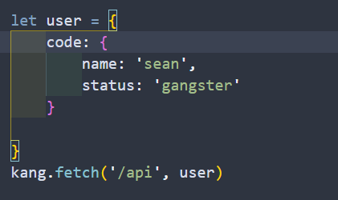
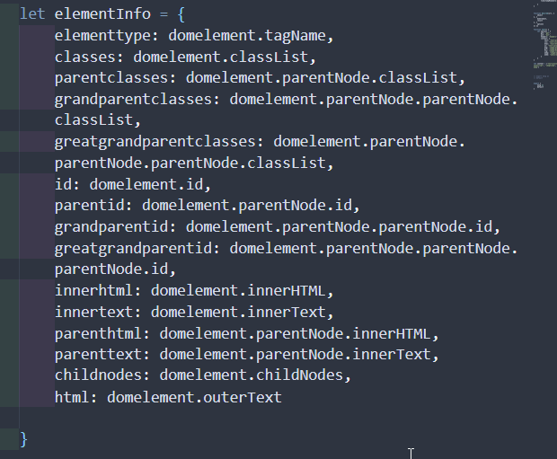
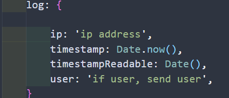
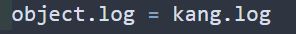

front-end
kang.fetch()

parameters:
url: pass in the '/location' you'd like to hit for the api
in the kang.fetch() function, the url defaults to window.location.origin + ${url} that you pass in, such
as '/api'
//kang.fetch(window.location.origin + '/api')
the fetch request defaults to a POST request
object

When fetching an object, it may be good practice to abstract your items with "code: {your keys: 'your
parameter'}"
This will come in handy later as when you want to reference your code, as distinguished from
auto-generated, responses, etc
alternatively, if you want to specifically target a collection, you can do that by defining the
collection in object.db.collection = 'Collection'
As well as if you want to define an action...
domelement (optional)
when we pass in an element, it looks like this:

right now the domelement is messy as fuck! but, this is the domelement that we want to manipulate. I'm sending a bunch of data to the server that the domelement includes as a means of attempting to find it later.
honestly, may not need it later (server side)
what the fetch object contains
and the server response:

result (optional)
this is what we're going to do with the domelement.. This should be a function defined however you want!
!!!!
maybe put the result function inside of the options????
options (optional)
options are the method, and headers. By default, it assumes there's a body, headers are content-type:
application/json, and method is post
you can alternatively set, for instance, a get method like this:

kang.log
log
this can be called at any time
attaching it to the kang.fetch(object) parameter
Automatically, when you call kang.fetch(url, object), the kang.log object is inserted into your object with object.log
say for instance, you had a user object where
let user = {name, height, weight}
Since a fetch req is being made, typically we want to log this (you don't have to, but kang does this by
default). So when you receive {user} on the server side, user.log contains all of the additional log
information